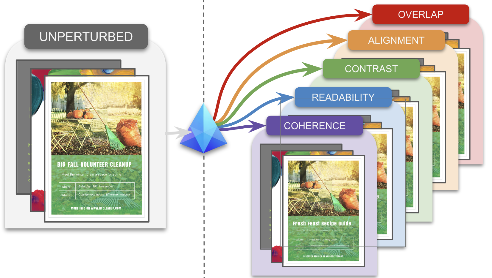
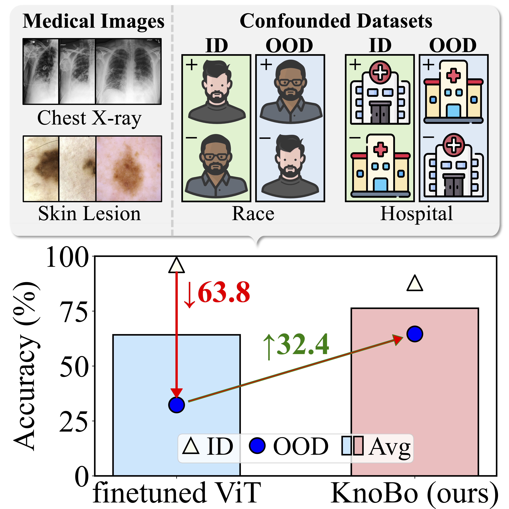
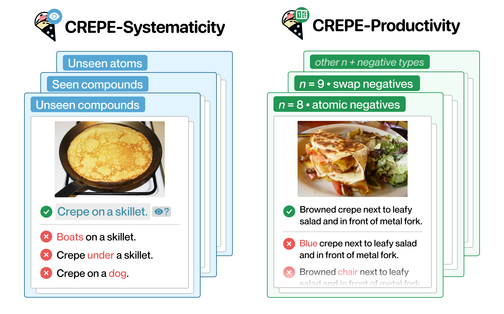
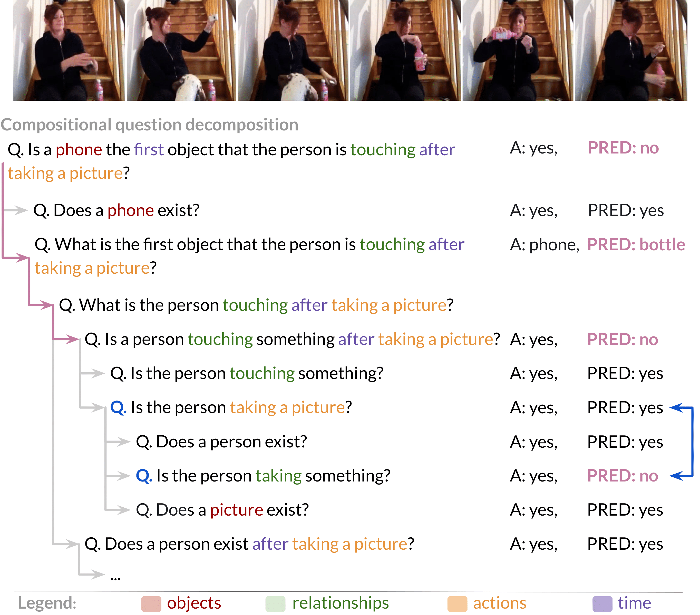

Hi! I am a second year PhD student majoring in Computer Science at The Ohio State University, advised by Prof. Srinivasan Parthasathy. Over the summer of 2025, I interned at Adobe Research mentored by Dr. Sayan Nag.
I completed my Masters in Computer Science at University of Pennsylvania, where I was grateful to be guided by Prof. Mark Yatskar. In the past, I have also had the opportunity to work with Prof. Ranjay Krishna and Prof. Maneesh Agrawala. I did my B.Tech in Computer Science from Veermata Jijabai Technological Institute (VJTI). My current research interests lie at the intersection of vision and language, which have been the focus of my past and current research experiences.
As increasingly powerful deep learning models in vision and language emerge, fundamental
questions like “What do the models actually learn?” and “What does the model base its predictions
on?” still persist. My long-term research goal is to build a robust and reliable model that would
be able to answer these questions. I wish to explore these two directions for it:
(i) leveraging human-like intuitions, such as learning compositionally, to boost the robustness of models and
(ii) building interpretable models such that we can use correctability methods to make sure
they don't rely on biases
and thereby facilitating reliability and robustness.

Mona Gandhi, Joseph KJ, Srinivasan Parthasathy, Sayan Nag
CVPR 2026 Findings
▶ TL;DR
PRISM is a benchmark and evaluation framework for interpretable assessment of visual design quality. Instead of producing a single opaque score, it evaluates layouts across key principles such as coherence, readability, contrast, alignment, and overlap using controlled perturbations of professional designs. Experiments show that existing multimodal models struggle to detect these targeted flaws and often fail to distinguish between different types of design issues. PRISM introduces principle-specific scorers and localizers that identify both what is wrong and where the problem occurs, enabling clear feedback and targeted design improvements.

Yue Yang, Mona Gandhi, Yufei Wang, Yifan Wu, Michael S. Yao, Chris Callison-Burch, James C. Gee, Mark Yatskar
NeurIPS 2024 [Highlight]
Best Paper Award (AIM-FM 2024 Workshop)
▶ TL;DR
We introduce Knowledge Bottlenecks (KnoBo) that incorporate priors from medical documents, such as PubMed, through inherently interpretable models. KnoBo is robust to domain shifts in medical images, e.g., data sampled from different hospitals or data confounded by demographic variables such as sex, race, etc. Overall, our work demonstrates that a key missing ingredient for robustness to distribution shift in medical imaging models is a prior rooted in knowledge.

Zixian Ma*, Jerry Hong*, Mustafa Omer Gul*, Mona Gandhi, Irena Gao, Ranjay Krishna
CVPR 2023 [Highlight: 10% of accepted papers / 2.5% of submissions]
▶ TL;DR
We introduce CREPE, a benchmark to systematically test whether vision-language models can reason compositionally about objects, attributes, and relations. Using a novel hard-negative generation approach, we create challenging test cases that require models to distinguish between similar but compositionally different image-text pairs. Our extensive evaluation of state-of-the-art models like CLIP and BLIP reveals significant gaps in their compositional reasoning abilities, particularly when handling negations and complex relational structures.

Mona Gandhi*, Mustafa Omer Gul*, Eva Prakash, Madeleine Grunde-McLaughlin, Ranjay Krishna, Maneesh Agrawala
CVPR 2022
▶ TL;DR
We introduce AGQA-Decomp, a benchmark that measures compositional consistency in video question answering models by decomposing complex questions into simpler sub-questions. Models should answer sub-questions consistently with their answers to the full question. Our evaluation reveals that state-of-the-art models lack compositional consistency, often providing contradictory answers to logically related questions about the same video, highlighting a fundamental weakness in their reasoning capabilities.
Domain: LLMs, Deep Learning
The Reversal Curse paper (linked below) highlights a simple task that these models fail at. If the model has seen A is B, it is not guaranteed that the model can generalize B is A - this is coined as Reversal Curse in the paper. In addition to replicating the results from the paper, we investigate the model on a verification task, where the model is asked a yes-no question. The model struggles to respond to these questions and even contradicts itself within the same response.
Domain: Computer Vision, Deep Learning
We proposed and implemented two novel methods to improve our outputs for neural style transfer: (i) fine-tuning the model as a classification for a particular style, and (ii) flattening the layers to allow us the convenience of adding style and content loss inside the blocks. Through network dissection, we compare the best models and positions for style and content loss. We found that mobilenetv2 with flattening with fine-tuned model gave the best visual results.
Technologies: ReactJS, MySQL
We have created a social cataloging application specifically for poetry lovers. Our aim was to make a platform that enables users to explore the world of poetry through an extensive collection of books, series, authors, and reviews. By signing in, users can create and maintain their own virtual library of poetry books, rate them, and receive custom recommendations based on their past behaviour about new poetry books that they might enjoy.
Domain: Computer Vision, Natural Language Processing
We implemented a Multi-modal Sarcasm Detector using video, audio and text features from the MUStARD dataset - data from various TV sitcoms like Friends, Big Bang Theory. Training and analyzing the performance of LSTMs with different types of attention mechanisms, we found the best performing model to learn a bias towards labeling data as sarcastic, but does very well in detecting non-sarcastic data.
Domain: Natural Language Processing
We implemented a Sentiment analysis system for Amazon Food Reviews. Text cleaning and feature extraction techniques were performed on the reviews data, namely removing special characters and numbers, removing stop words, and tokenizing the data. Other forms of text vectorizations were also examined, including Word2Vec, GLOVE and Bag-of-Words. We developed baseline models using Naive Bayes, Logistic Regression, and XGBoost, before moving to LSTM models. Finally we also evaluated BERT embeddings with LSTM.
Domain: Natural Language Processing
We developed a Fake-News Detector using Transformer-based model - BERT trained on LIAR dataset. On analysis, we infer that the model does well classifying false statements, and does a poor job classifying true statements.
Technologies: HTML, CSS, ReactJS
Many algorithms in computer science become easier to understand if visualized. I developed a tool to visualize sorting algorithms like bubble sort, merge sort and insertion sort where every comparison the algorithm makes can be seen. There is an interactive page to see every node path finding algorithms like BFS, DFS, Dijkstra's visit where one can add weights and walls in the grid. Making comparing various algorithms against each other easier.
Technologies: Flask, HTML, CSS, JS
Managing information about students, staff, admission process for a Hostel is tedious. We created a website which does not not require the person handling the system to be very efficient or to be good at calculations. Some key features are managing data of students, staff, students' representative, admission process, mess and also helps in maintaining exit-entry records of students who stay in the hostel, visitors and couriers delivered to them.
Domain: Network Security, Machine Learning
Given the huge amount of traffic on a network detecting malicious activities using machine learning becomes difficult as it can hide easily in normal traffic. We create an ensemble of various imbalance reduction techniques, while comparing them against each other. We infer that Depending upon the combination of techniques used for the ensemble, the results have varied. Ensembles of certain techniques did prove to show better results.